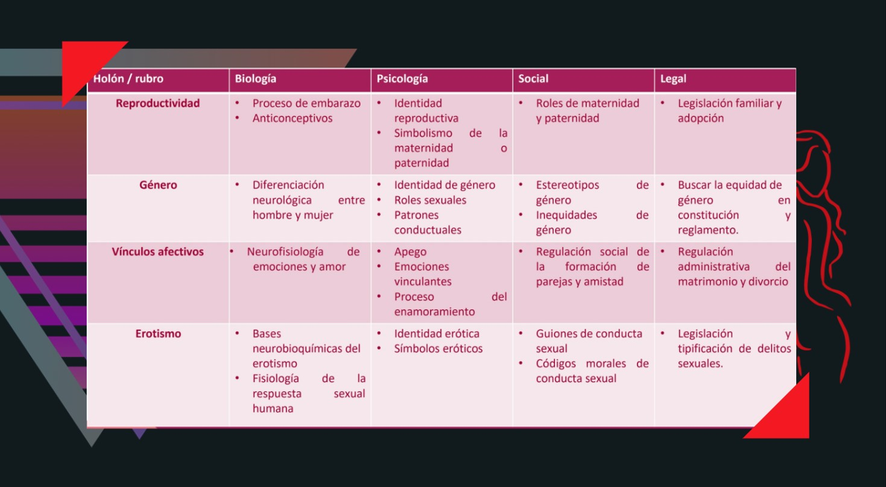

CONCEPTO BIOPSICOSOCIAL DE LA SEXUALIDAD
Introducción:
Para empezar debemos saber cual es el concepto de sexualidad, no obstante, han existido a lo largo de los años, varias formas de considerar a la sexualidad dependiendo, fundamentalmente, de la modalidad de pensamiento científico y de la particular disciplina desde donde se estudie a eta. Así existen, concepciones psicodinámicas de la sexualidad, que se caracterizan sobre todo por asumir la existencia de impulsos, aparentemente innatos, en el ser humano y que se van a enfrentar a las limitaciones de la realidad en la forma de regulación social o autorregulación que de manera inevitable conducen al conflicto.
Para estandarizar este amplio concepto, en 2006 la OMS publica un reporte donde se define a la sexualidad como: “La sexualidad es una aspecto central del hecho del ser humano a lo largo de toda la vida. Esta incluye:
- • Sexo
- • Identidades y papeles de género
- • La orientación sexual
- • El erotismo
- • El placer
- • El placer
- • La reproducción.
La sexualidad se vive y se expresa con pensamientos, fantasías, deseos, creencias, actitudes, valores, comportamientos, practicas, papeles y relaciones interpersonales. Aunque la sexualidad engloba estas dimensiones no todas se viven o expresan siempre. La sexualidad esta influenciada por la interacción de factores biológicos, psicológicos y sociales, económicos, políticos, culturales, éticos, legales, históricos, religiosos y espirituales.” (OMS, 2006).
Dentro de esta estandarización, se le puede construir a partir de los planteamientos de la Teoría del Sistema General y estudiarse como un sistema, por medio de la descripción de holones (holón es la parte de un sistema que a su vez es tan complejo en su organización interna que merece ser considerado como una totalidad en sí mismo).
Rescatando la definición de la ONU y el sistema de holones con base en la Teoría del Sistema General se tiene que la sexualidad se ve influenciada por la interacción de factores: biológicos, psicológicos y sociales. A lo que nos compete, estos últimos elementos nos darán la pauta para la descripción biopsicosocial.